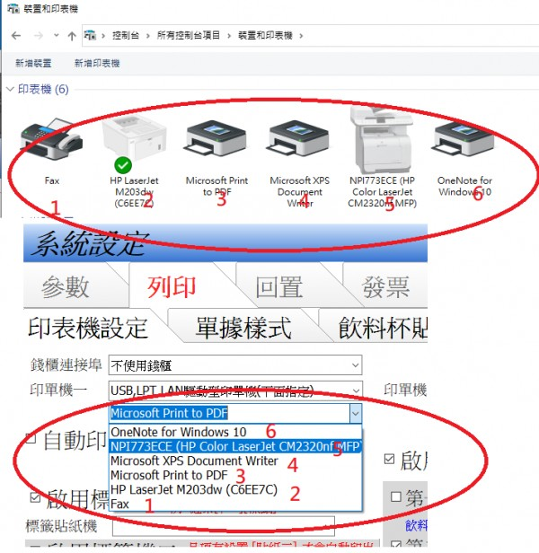

出單機設定常跑掉
ps. 目前使用兩台出單機
4 個回答
您好
在windows系統裡 對於印表機的定義是第幾台
先用系統裡的Options.ini 紀錄的是印表機的順序號碼
如果您改變了控制台->印表機的順序 那就會發生"設定跑掉"的情形
通常是您去做了安裝 或刪除印表機的驅動 才會改變了控制台->印表機的順序 此時 您必須進入先用系統 去重新做設定 ,因為印表機的順序已經改變

基本上，沒有變動印表機裝置（即：不會去「安裝或刪除印表機的驅動」），也沒有變更原預設的印表機。若 Options.ini 紀錄的只是印表機順序，那會不會是 USB 系統鎖偶爾讀取不到（因: 開 POS 軟體，偶爾會跑到「試用」畫面），就會將 USB 重新插拔或再重開機，不知是否為此狀況所致？此會再持續觀察。
先用系統的印表機是讀取 windows系統的 控制台->裝置和印表機 中的印表機列表, 正常而言 插拔USB並不會異動windows系統的印表機列表
站長猜測可能是windows 10的更新檔有問題
近期的windows 10 更新常常出包 將USB 印表機設定弄亂 如果您最近有更新windows10 那也許是更新造成的
https://www.ithome.com.tw/news/138231
如果使用上沒問題 建議關閉windows 10 的自動更新
站長猜測可能是windows 10的更新檔有問題
近期的windows 10 更新常常出包 將USB 印表機設定弄亂 如果您最近有更新windows10 那也許是更新造成的
https://www.ithome.com.tw/news/138231
如果使用上沒問題 建議關閉windows 10 的自動更新
Windows 10 KB4560960 與 KB4557957 都沒有更新；自動更新稍早已關閉，會再觀察一陣子，看是否是Windows 更新重開機所致。故暫時先如此處理，感謝解答！！